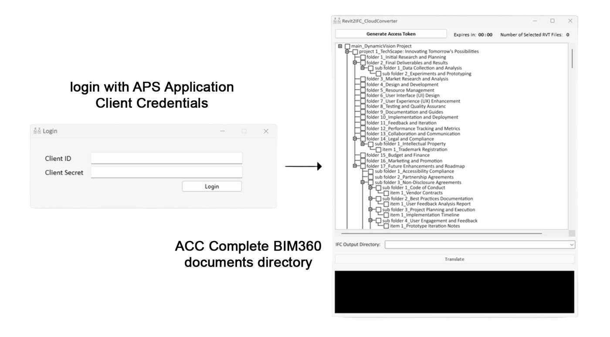

Revit2IFC_CloudTranslator
Revit to IFC in the cloud, with no Revit installed
A small desktop app for converting Revit models hosted on Autodesk Construction Cloud to IFC without opening Revit. You log in with your APS credentials, tick models in a tree of the whole hub, choose an output folder and translate. The app polls each cloud job until it finishes, downloads the IFC files, removes older files with the same name in the target folder, then uploads the new ones as finished versions.
How it works
The interface

Login with APS client credentials, then a cascading checklist of the whole document tree. Names shown are placeholders.
Design decisions
No local RevitConversion runs entirely in the cloud, so any machine can run it.
Cascading selectionTicking a folder ticks everything inside, with a live file counter.
Token awarenessA 60-minute countdown shows when the access token expires.
Compared with AutoIfcExporterThis trades per-conversion cloud cost for needing no Revit licence or server.